FRONT DIFFERENTIAL CARRIER ASSEMBLY > DISASSEMBLY |
| 1. REMOVE DIFFERENTIAL EXTENSION FLANGE TUBE |
 |
Remove the 4 bolts.
Using a plastic-faced hammer, remove the differential tube.
| 2. REMOVE DIFFERENTIAL SIDE GEAR SHAFT OIL SEAL |
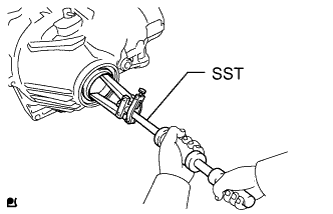 |
Using SST, tap out the oil seal.
| 3. REMOVE FRONT DRIVE PINION COMPANION FLANGE FRONT NUT |
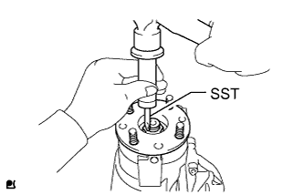 |
Using SST and a hammer, unstake the nut.
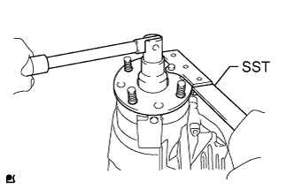 |
Using SST to hold the companion flange, remove the nut.
| 4. REMOVE FRONT DRIVE PINION COMPANION FLANGE SUB-ASSEMBLY |
 |
Using SST, remove the companion flange from the differential carrier.
| 5. REMOVE FRONT DIFFERENTIAL CARRIER OIL SEAL |
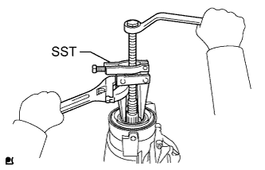 |
Using SST, remove the oil seal.
| 6. REMOVE FRONT DIFFERENTIAL DRIVE PINION OIL SLINGER |
| 7. REMOVE FRONT DIFFERENTIAL CROSS SHAFT BEARING RETAINER |
 |
Remove the bolts labeled B and front differential front support assembly LH.
Remove the bolts labeled A.
Using a plastic-faced hammer, tap out the bearing retainer.
| 8. REMOVE FRONT NO. 1 DIFFERENTIAL CASE SUB-ASSEMBLY |
Remove the differential case from the differential carrier.
| 9. REMOVE DIFFERENTIAL DRIVE PINION |
 |
Set the differential carrier to an overhaul stand as shown in the illustration.
Using a press, press out the drive pinion.
| 10. REMOVE FRONT DRIVE PINION FRONT RADIAL BALL BEARING |
Remove the bearing (inner race) from the differential carrier.
| 11. REMOVE FRONT DIFFERENTIAL BREATHER PLUG OIL DEFLECTOR |
 |
Remove the 2 bolts and oil deflector.
| 12. REMOVE FRONT DIFFERENTIAL UNION |
 |
Remove the front differential union from the differential carrier.
| 13. REMOVE FRONT DRIVE PINION REAR TAPERED ROLLER BEARING |
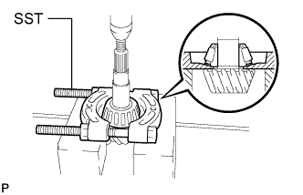 |
Using SST and a press, press out the bearing (inner race) from the drive pinion.
| 14. REMOVE FRONT DRIVE PINION REAR TAPERED ROLLER BEARING |
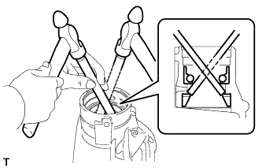 |
Using a brass bar and hammer, tap out the bearing (outer race) and washer.
| 15. REMOVE FRONT DRIVE PINION FRONT RADIAL BALL BEARING |
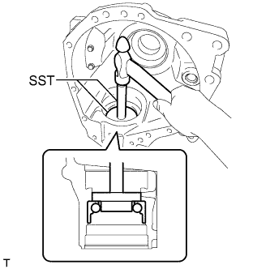 |
Using SST and a hammer, tap out the bearing (outer race) from the differential carrier.
| 16. REMOVE FRONT DIFFERENTIAL CASE BEARING |
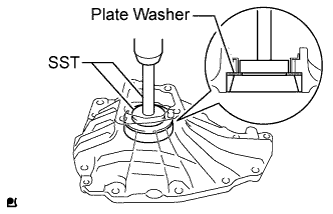 |
Using SST and a press, press out the bearing (outer race) and plate washer from the bearing retainer.
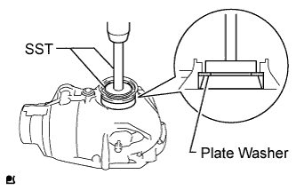 |
Using SST and a press, press out the bearing (outer race) and plate washer from the differential carrier.
| 17. REMOVE DIFFERENTIAL RING GEAR |
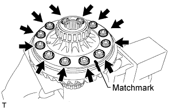 |
Place matchmarks on the ring gear and differential case.
Remove the 12 bolts.
Using a plastic-faced hammer, tap on the ring gear to disconnect it from the differential case.
| 18. REMOVE FRONT DIFFERENTIAL CASE BEARING |
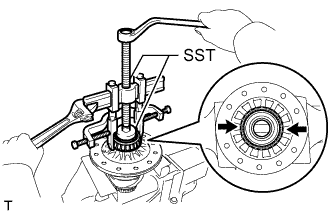 |
Using SST, remove the 2 bearings (inner race).
| 19. DISASSEMBLE DIFFERENTIAL CASE |
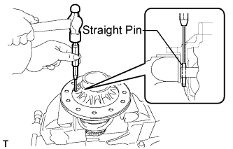 |
Using a pin punch and hammer, tap out the straight pin.
Remove these parts from the differential case assembly.
2 differential side gears
2 differential side gear thrust washers
Differential pinion shaft
2 differential pinion gears
2 differential pinion gear thrust washers
| 20. INSPECT DIFFERENTIAL GEAR KIT |
Check that there is no damage to the pinion gears and side gears.
If a pinion gear and/or side gear is damaged, replace the differential gear kit.
| 21. INSPECT FRONT NO. 1 DIFFERENTIAL CASE SUB-ASSEMBLY |
Check that the differential case is not damaged.
If the differential case is damaged, replace it.
| 22. REMOVE DIFFERENTIAL SIDE GEAR SHAFT OIL SEAL |
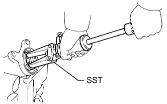 |
Using SST, tap out the oil seal from the flange tube.
| 23. REMOVE DIFFERENTIAL SIDE GEAR SHAFT SUB-ASSEMBLY RH |
 |
Using a snap ring pliers, remove the snap ring.
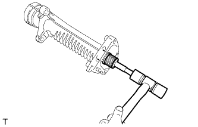 |
Using a plastic-faced hammer, tap out the side gear shaft.
| 24. REMOVE FRONT DIFFERENTIAL SIDE GEAR SHAFT RH BEARING |
 |
Using a snap ring expander, remove the snap ring.
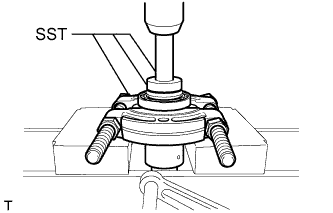 |
Using SST and a press, press out the bearing.
| 25. REMOVE FRONT DIFFERENTIAL CARRIER STRAIGHT PIN |
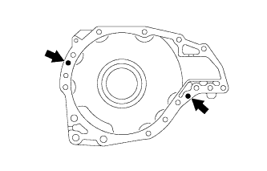 |
Remove the straight pins from the bearing retainer.
| 26. REMOVE FRONT DIFFERENTIAL TUBE STRAIGHT PIN |
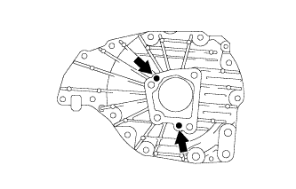 |
Remove the straight pins from the bearing retainer.